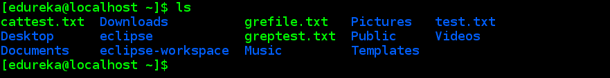

The Linux command line is a text interface to your computer. Often referred to as the shell, terminal, console, prompt or various other names, it can give the appearance of being complex and confusing to use.

- pwd - This command Displays the current working directory of the terminal.
- echo - This command writes its arguments to standard output.
- clear - This ommand is used to clear the terminal screen.
- cp -This command copies files and directories. A copy of the file/directory copied, still remains in the working directory.
- mv - This command moves files and directories from one directory to another.
The file/directory once moved, is deleted from the working directory. - rm - This command removes files from a directory. By default, the rm command does not remove directories.
Once removed, the contents of a file cannot be recovered. - grep - This command is used to search for a particular string/ word in a text file. This is similar to “Ctrl+F”, but executed via a CLI.
- cat - This command can read, modify or concatenate text files. It also displays file contents.
- ls - This command lists all the contents in the current working directory.
- cd - This command is used to change the current working directory of the user.
- sort - This command sorts the results of a search either alphabetically or numerically.
Files, file contents and directories can be sorted using this command. - mkdir - This command is used to create a new directory.